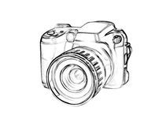

Today was my birthday.
My friends and family went all out to celebrate even though I told them how much I despise celebrating birthdays. It's like any other day, I just happened to be born on this day some years ago, big whoop. But my parents got me a pretty cool camera! I may hate birthdays but I really do appreciate the effort and enthusiasm they put in to spending time with me. I love them so much...I don't know what I'd do without them.

I'll write more later, yet again my mom needs help turning the tv on. Old farts and technology, amirite?
December 16th, 2019
Entry #2
Wow, it's been six years since I last wrote in this old journal. I found it today while cleaning out my old room. A lot has happened...
After I moved out to college my parents started having finance issues. I guess this is what started all the other issues they uncharacteristically had. The lies, the affair, the arguments...this isn't them.
Was I the only thing keeping them together while I was still living at home? Were these issues happening around me but I hadn't even realized? I can't remember...Either way, they decided neither of them wanted to keep the house so that's why I'm here. I'm looking through my old room to see if I want to keep or throw anything. That's when I found this old journal, figured I should keep this old thing with me and document everything now. Will it be anything worth reading? Who knows, stay tuned.
Entry #3
I found some old drawings of mine when I was a wee ol' kid. Even at that younge age I was drawing about how happy my parents and I all were...Now I'm questioning if they were even happy then.
The
first drawing I found was when we went to the park where they swung me between them as we walked. I remember feeling so giddy that I could almost touch the sky with my parents help. Feels just like yesterday that that had happened. Where did the time go?
This
second drawing I found I remember so vividly. This was when my mom and I baked our first cake together. The mess we made was insane, but neither of my parents were mad at that fact. It was all happiness and laughter at that moment. To think this family is broken up more than ever now. Who would've thought?
This
last image broke my heart. It was when my dad fell ill and stayed in the hospital for quite some time. My mom was by his side 24/7. She cared for him so much in that moment. The love they had proved to be so strong. I miss seeing those moments.
Entry #4
I've just about finished up here at my old house. It's amazing how one room can hold so many precious memories. It's like its own time capsule, it was nice to come back and revisit it. How I wish part of me could turn back time and change history. Now I have no home to come back to from college. No nostalgia when I walk into my mom or dads new house. I guess that's part of life. You never know what's going to happen and all you can do is move on.
My mom called saying she'll be over in about 20 minutes to come talk to me.
I guess this'll be the end of my journaling tonight.
Until next time.